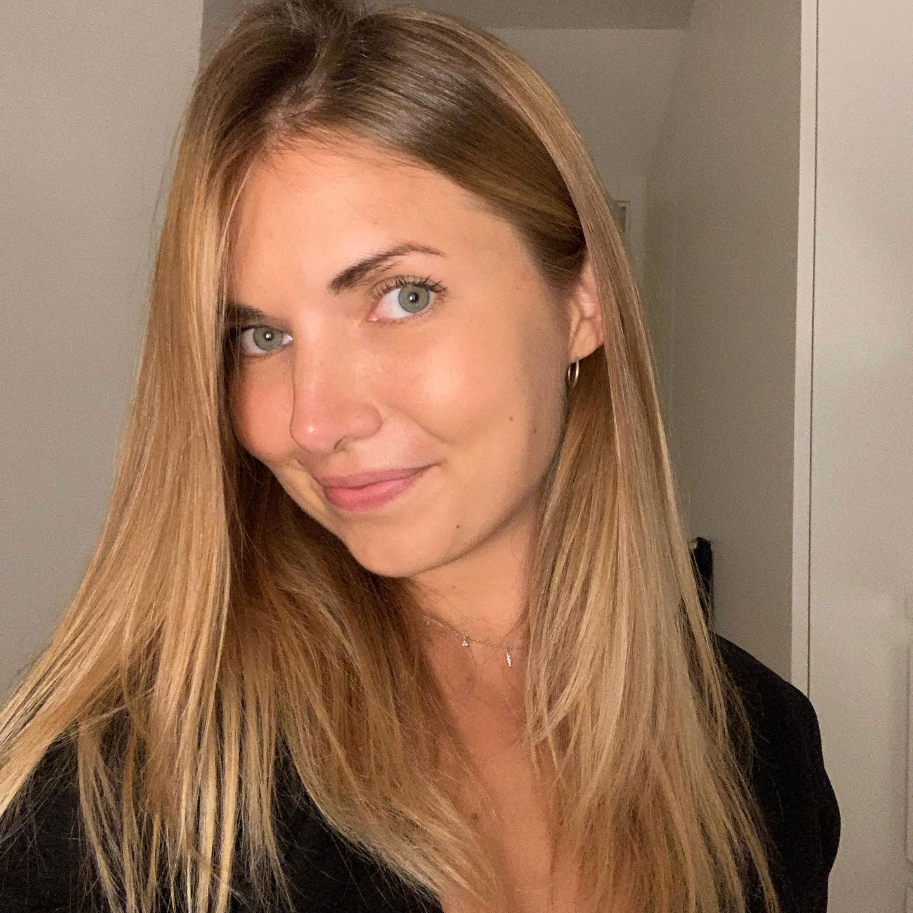
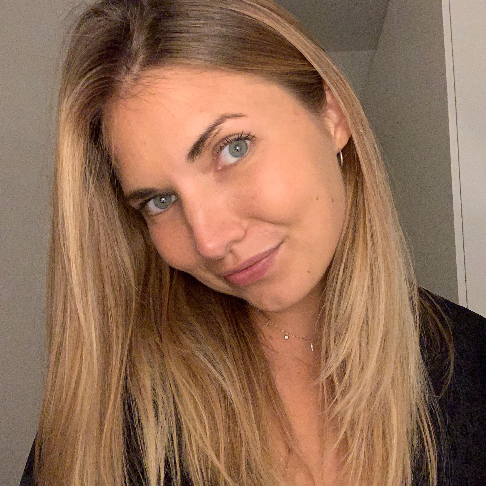

TanjaRønnemose...
Mit navn er Tanja Rønnemose. Jeg er 25 år og studerer multimediedesign på UCL i Odense.
Jeg har tidligere tilbragt tre år på SDU i Odense, hvor jeg læste en bachelor i international virksomhedskommunikation med engelsk og spansk. De sidste to semestre af min bacheloruddannelse valgte jeg at tage i Guadalajara i Mexico med fokus på at udvide mine spanske og interkulturelle kompetencer.
Ved siden af studiet arbejder jeg som content manager på et web- og reklamebureau. Her ligger mine arbejdsopgaver inden for tekstforfatning, SEO og andet tekstrelevant arbejde.
Hvorfor multimediedesign?
Med en baggrund inden for kommunikation har jeg erhvervet mig en masse relavant viden og indsigt i organisation, markedsføring og kommunikation. Dog sad jeg, efter endt uddannelse, med et behov for at udvide mine kompetencer inden for det kreative felt. Med multimediedesign kunne jeg både tilegne mig endnu flere og kreative kompetencer samtidig med, at jeg i et fremtidigt perspektiv stadig kan benytte min viden inden for kommunikation.
Mine kvaliteter
Kreativitet, kommunikation og engagement er nogle af mine stærkeste kompetencer. Jeg elsker at blive udfordret og prøve kræfter med nye og spændnende opgaver. Jeg er altid engageret i mine opgaver og yder gerne en ekstra indsats for at de følges til dørs og løses tilfredsstillende.
Som person er jeg perfektionistisk og har sans for detaljer. Jeg yder altid mit bedste og afleverer aldrig halvfærdigt arbejde.
Hvad kan jeg tilbyde?
Jeg kan tilbyde en person, der brænder for at kommunikere på tværs af målgrupper med henblik på at skabe unikt og målrettet webdesign. Ved hjælp af mine kommunikative evner og kompetencer, bestræber jeg mig på at dyggtiggøre mig med henblik på at være i stand til at skabe en visuel identitet for kunden med fokus på dennes behov og ønsker.